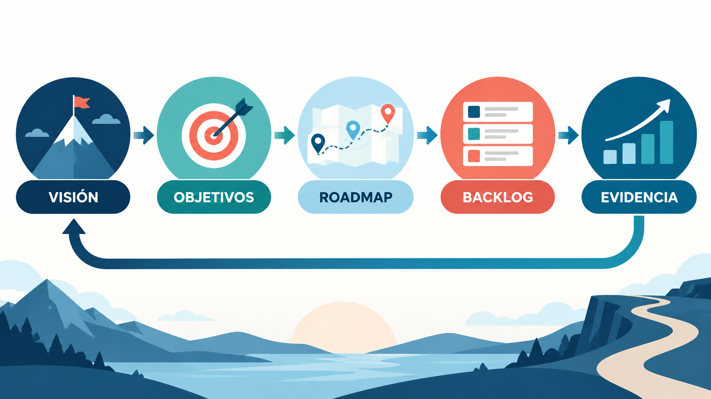
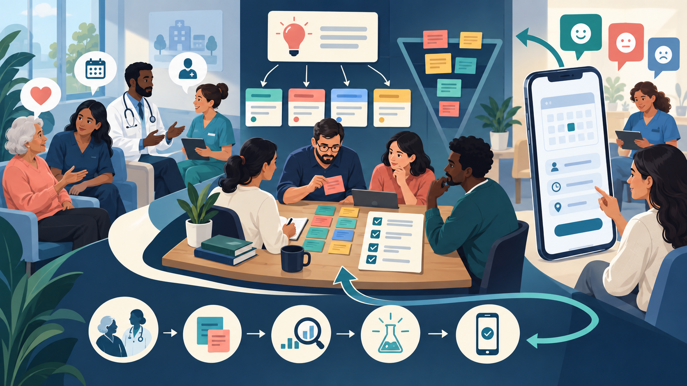
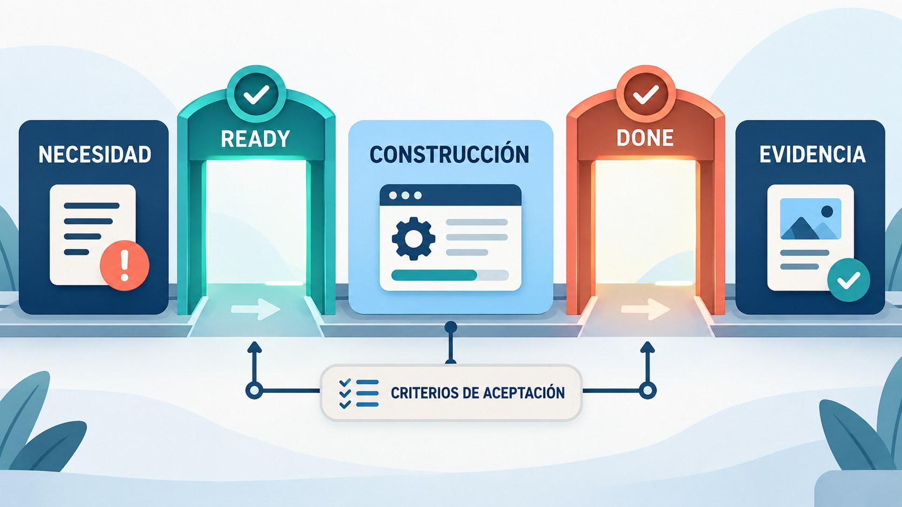

El equipo ya conoce los marcos. Ahora debe responder la pregunta que evita construir funciones inútiles: ¿qué problema vale la pena resolver primero?
Seguiremos dos casos. TurnoYa conserva ejemplos de producto digital; el asistente universitario con IA permite distinguir una métrica técnica de un beneficio real para estudiantes.
Cómo recorrer este módulo
- Definir visión, objetivos y evidencia de éxito para un producto de IA.
- Comprender usuarios, stakeholders y necesidades.
- Organizar el Product Backlog dentro del contexto Scrum.
- Usar historias, criterios, calidad, refinamiento y priorización como prácticas complementarias.
- Diseñar MVP, roadmap, releases y decisiones de cambio con una narrativa de producto.
1. Visión y objetivos del producto
La clínica pide una aplicación. Antes de aceptar una lista de pantallas, preguntá qué problema debería dejar de ocurrir y cómo notaríamos la mejora.
Una visión de producto expresa el futuro deseado para usuarios y negocio: por qué existe el producto y qué cambio busca producir. Ayuda a elegir entre alternativas, aunque no garantiza éxito. Si TurnoYa busca facilitar el acceso a turnos médicos, una decisión de diseño debería poder explicarse por su aporte a ese propósito, además de por su viabilidad. La visión se contrasta con la investigación y el aprendizaje del equipo.
Una visión bien redactada suele responder a un formato similar al propuesto por Geoffrey Moore (adaptado de la técnica del "elevator pitch"): "Para [usuario objetivo] que [necesidad o problema], el [nombre del producto] es un [categoría de producto] que [beneficio clave / propuesta de valor]. A diferencia de [alternativa principal], nuestro producto [diferencial]." Por ejemplo, para una aplicación de gestión de turnos médicos: "Para pacientes de clínicas privadas que necesitan reservar y reprogramar turnos sin llamar por teléfono, TurnoYa es una aplicación móvil que permite gestionar toda la agenda médica familiar en menos de un minuto. A diferencia de los sistemas telefónicos tradicionales, TurnoYa funciona las 24 horas y envía recordatorios automáticos." Nótese que esta visión no dice nada sobre si se usará React Native o Flutter, ni sobre si habrá notificaciones push o SMS: esas son decisiones de implementación que vendrán después.
Un objetivo convierte la visión en un resultado observable. Para el semestre del piloto de TurnoYa proponemos que el 60 % de las reservas se realice por la aplicación y que el ausentismo disminuya un 15 % respecto de la tasa inicial. Son metas del escenario didáctico, no resultados obtenidos. Hay que definir el período, la población y cómo se medirá cada dato; un objetivo no demuestra que una funcionalidad causará esa mejora.
Ejemplo resuelto: porcentaje y puntos porcentuales. Suponé que inicialmente faltan 20 pacientes de cada 100: la tasa es 20 %. Reducirla un 15 % relativo significa calcular 20 % × 0,85 = 17 %, una disminución de 3 puntos porcentuales. Bajar 15 puntos porcentuales sería llegar al 5 %, una meta muy diferente. Antes de priorizar recordatorios, acordamos la definición y verificamos qué otras causas influyen en el ausentismo.
Es responsabilidad principal del Product Owner (o del Product Manager, según la estructura organizacional) mantener viva esta visión, comunicarla constantemente al equipo y a los stakeholders, y revisarla cuando el contexto de mercado cambie sustancialmente. Una visión que nadie recuerda o que quedó escrita en un documento olvidado no cumple su función: debe estar presente, por ejemplo, en el encabezado del tablero del equipo, repetida al inicio de cada Sprint Planning, o visible en la oficina o canal de comunicación del equipo.
1.1 Visión versus misión, y el North Star Metric
Conviene distinguir la visión de producto de la misión organizacional: la misión suele ser más amplia y estable, y describe el propósito general de la empresa (por ejemplo, "democratizar el acceso a la salud"), mientras que la visión de producto es más acotada y se refiere específicamente a lo que ese producto en particular aporta dentro de ese propósito mayor. Un mismo negocio puede tener una sola misión y, al mismo tiempo, varios productos con visiones propias, cada una alineada a la misión pero enfocada en su propio segmento de usuarios y problema.
Una herramienta complementaria muy utilizada por equipos de producto maduros es el North Star Metric (métrica estrella del norte): una única métrica cuantitativa que mejor captura el valor central que el producto entrega a sus usuarios, y que sirve como indicador de si la visión se está cumpliendo en la práctica. Para la aplicación de turnos médicos, una North Star Metric razonable sería "cantidad de turnos efectivamente cumplidos (sin ausentismo) reservados a través de la app por semana", porque combina adopción (uso de la app) con el resultado que realmente importa (turnos cumplidos, no solo reservados). Esta métrica ayuda a evitar que el equipo optimice indicadores vanidosos (por ejemplo, "descargas totales de la app") que no reflejan verdadero valor entregado.
1.2 Objetivos para un producto de IA
“Mejorar la precisión del modelo” describe un resultado técnico incompleto. El producto existe para ayudar a alguien. En el asistente universitario podemos combinar tres niveles:
- Beneficio: estudiantes resuelven consultas sin recibir información desactualizada.
- Comportamiento: proporción de consultas que se resuelve sin derivación innecesaria.
- Calidad técnica: respuestas correctas y respaldadas en una muestra definida.
Las métricas se complementan. Un sistema puede obtener buen puntaje en una prueba y aun así resultar confuso, lento o poco utilizado.
2. Comprender necesidades e interesados
¿La propuesta del gerente representa también la experiencia del paciente y de la recepcionista? Escuchar a quien paga no alcanza para comprender a quien usa.
En el Módulo 1 identificamos a los interesados y distinguimos sus funciones. Aquí profundizamos qué necesitan, qué evidencia aportan y cómo participan en decisiones de producto. El mapa se revisa durante todo el proyecto, tanto en gestión predictiva como ágil: pueden aparecer nuevos usuarios, restricciones o actores. La frecuencia y el modo de revisión dependen del contexto, no de una oposición entre “identificar una vez” y “escuchar continuamente”.
2.1 Tipos de stakeholders en contexto de producto
Conviene distinguir al menos cuatro categorías. Primero, los usuarios finales, que son quienes usan el producto directamente y cuya satisfacción es el termómetro último del éxito. Segundo, los clientes o patrocinadores, que pagan por el producto o autorizan el presupuesto, y que no siempre coinciden con los usuarios finales (por ejemplo, en un software de recursos humanos, el cliente que paga es la gerencia, pero los usuarios finales son los empleados que cargan sus datos). Tercero, los stakeholders internos, como equipos de soporte, ventas, legales, marketing o infraestructura, que dependen del producto o lo condicionan (por ejemplo, el área legal puede exigir que cierta funcionalidad cumpla con la Ley de Protección de Datos Personales antes de salir a producción). Cuarto, los stakeholders reguladores o externos, como organismos de control, proveedores críticos o socios estratégicos.
2.2 Técnicas de identificación y priorización de stakeholders
Una herramienta clásica y muy útil es la matriz de poder e interés (power/interest grid), que ubica a cada stakeholder en un cuadrante según su nivel de influencia sobre el producto y su nivel de interés en él. A quienes tienen alto poder y alto interés hay que gestionarlos de cerca, involucrándolos activamente en revisiones y decisiones clave (por ejemplo, el sponsor ejecutivo del proyecto). A quienes tienen alto poder pero bajo interés conviene mantenerlos satisfechos con información resumida y oportuna, sin saturarlos de detalle operativo. A quienes tienen bajo poder pero alto interés —típicamente usuarios avanzados o "power users"— conviene mantenerlos bien informados, porque pueden convertirse en aliados y evangelizadores del producto. Y a quienes tienen bajo poder y bajo interés basta con monitorearlos con esfuerzo mínimo.
En Scrum, el equipo puede conversar directamente con usuarios e interesados para descubrir necesidades, probar soluciones y recibir feedback. Esa colaboración no autoriza a incorporar pedidos al Sprint por fuera de los acuerdos: las propuestas se hacen visibles y el Product Owner conserva la responsabilidad por el orden del Product Backlog. Si un pedido afecta el trabajo en curso, Developers y Product Owner examinan su impacto sobre el objetivo del Sprint. Escuchar al usuario y gestionar prioridades son funciones complementarias, no canales incompatibles.
2.3 Plan de comunicación con stakeholders
Identificar y clasificar a los stakeholders es solo el primer paso; el segundo, igualmente importante, es definir cómo y con qué frecuencia se comunicará cada grupo. Un plan de comunicación simple pero efectivo suele especificar, para cada categoría de stakeholder, qué información recibe, con qué periodicidad y por qué canal. Por ejemplo, el sponsor ejecutivo de la clínica podría recibir un resumen ejecutivo mensual con métricas de adopción y cumplimiento de objetivos, mientras que los usuarios avanzados (recepcionistas de las clínicas piloto) podrían participar de sesiones quincenales de feedback directo con el Product Owner. Formalizar esto evita dos problemas opuestos y igualmente dañinos: la sobrecomunicación (que satura a stakeholders con bajo interés y les hace perder el foco en lo relevante) y la subcomunicación (que genera desconfianza y sorpresas negativas en quienes tienen alto poder de decisión sobre el producto).

3. Product Backlog en Scrum: organizar las necesidades
Analogía: preparar una comida y revisar la despensa. La visión explica para qué ocasión cocinamos; el backlog reúne opciones; el refinamiento permite entender ingredientes, trabajo y restricciones antes de elegir. Comprar todo lo imaginable no mejora la cena. La comparación ayuda a entender selección y preparación, pero un backlog no es una lista de compras cerrada: también contiene investigaciones, riesgos y necesidades que pueden cambiar al observar el producto.
TurnoYa tiene ideas de negocio, errores y mejoras técnicas. ¿Cómo evitamos que existan tres listas que compiten en secreto?
El Product Backlog es la lista única, ordenada y emergente de todo lo que se conoce que es necesario para el producto: funcionalidades nuevas, mejoras, correcciones de errores, tareas técnicas (deuda técnica) y cualquier otro trabajo que agregue valor. A diferencia del roadmap, que es de alto nivel y aproximado, el backlog contiene ítems cada vez más detallados a medida que se acercan a la parte superior de la lista, siguiendo el principio de refinamiento progresivo (también llamado "DEEP": Detallado apropiadamente, Estimado, Emergente y Priorizado).
3.1 Quién gestiona el backlog
Según la Guía Scrum, el Product Owner es el único responsable de la gestión del Product Backlog: decide qué contiene, cómo se ordena y qué se comunica al equipo, aunque puede delegar el trabajo de redacción a otros. Esto no significa que el Product Owner trabaje aislado: la construcción del backlog es, en la práctica, un proceso profundamente colaborativo, donde el equipo de desarrollo aporta factibilidad técnica y estimaciones, y los stakeholders aportan contexto de negocio y necesidades de usuario. Lo que sí es exclusivo del Product Owner es la decisión final sobre el orden: si dos personas priorizan el backlog de manera diferente, el producto pierde coherencia estratégica, por eso la autoridad debe estar concentrada en un solo rol.
3.2 Características de un buen backlog
Un backlog saludable cumple varias condiciones. Es único: no existen backlogs paralelos o listas de pedidos alternativas fuera del backlog oficial. Es ordenado: cada ítem tiene una posición relativa que refleja su prioridad, no hay "empates" ambiguos en la parte alta de la lista. Es transparente: cualquier stakeholder puede consultarlo y entender qué se está considerando y en qué orden. Está en refinamiento continuo: no se escribe una sola vez al inicio del proyecto y se congela, sino que se revisa y ajusta constantemente a medida que se aprende más sobre el producto, el mercado y la tecnología. Y, sobre todo, refleja valor: cada ítem debería poder justificar por qué está ahí y qué aporta, evitando el "backlog cementerio" donde se acumulan ideas que nadie prioriza nunca pero tampoco nadie elimina.
Un error muy común en equipos que recién adoptan Scrum es confundir el backlog con una lista de tareas técnicas desordenada, o dejar que crezca sin límite hasta volverse inmanejable (backlogs de miles de ítems son, en la práctica, sinónimo de backlogs no gestionados). Una buena práctica es realizar limpiezas periódicas ("backlog grooming" en su sentido más literal de "peinar"), eliminando o archivando ítems que perdieron relevancia.
3.3 Product Backlog versus Sprint Backlog
Como vimos en el Módulo 2, el Product Backlog expresa necesidades emergentes del producto y el Product Owner responde por su gestión efectiva. El Sprint Backlog reúne el Sprint Goal, los elementos seleccionados y el plan de los Developers. Es un plan vivo que se actualiza al aprender, no una fotografía congelada ni una promesa de completar cada elemento. Developers y Product Owner pueden renegociar alcance sin poner en peligro el objetivo del Sprint ni reducir calidad.
4. Épicas, funcionalidades, historias y tareas
“Gestionar pagos” y “consultar un comprobante” no son unidades equivalentes. Elegir el tamaño del trabajo cambia qué podemos discutir y comprobar.
Una propuesta como “gestionar pagos” no tiene el mismo tamaño que “consultar un comprobante”. Para conversar y coordinar podemos usar iniciativas, épicas, funcionalidades, historias y tareas. La taxonomía varía entre organizaciones y herramientas: no es una jerarquía universal exigida por Scrum. Aquí vamos a utilizar iniciativa → épica → funcionalidad → historia → tarea como convención de los ejemplos, sin convertir cada nivel en un trámite obligatorio.
Una épica es un cuerpo de trabajo grande que agrupa varias historias de usuario relacionadas y que, por su tamaño, no puede completarse en un solo sprint; suele tomar varios sprints o incluso meses. Por ejemplo, "Gestión de pagos dentro de la aplicación" podría ser una épica que agrupa historias como "como usuario quiero pagar con tarjeta de crédito", "como usuario quiero pagar con billetera virtual", "como usuario quiero ver el historial de pagos", etc. Una épica típicamente se mantiene en el backlog con poco detalle mientras está lejos en el tiempo, y se va desglosando en historias de usuario concretas a medida que se acerca el momento de trabajarla (esto es, precisamente, el refinamiento progresivo mencionado antes).
Una funcionalidad o feature es un nivel intermedio, opcional según el marco de trabajo utilizado (es muy usado en SAFe y en organizaciones grandes con múltiples equipos), que describe una capacidad entregable del producto, de tamaño mediano, que puede agrupar varias historias de usuario pero que sí puede completarse en un plazo acotado (por ejemplo, un lanzamiento o un horizonte de planificación acordado). Siguiendo el ejemplo anterior, "Pago con billetera virtual" podría ser una feature dentro de la épica "Gestión de pagos", compuesta a su vez por varias historias de usuario ("conectar cuenta de billetera", "confirmar pago", "ver comprobante").
Es importante notar que estos niveles son una herramienta de organización, no una burocracia obligatoria: equipos pequeños con un solo producto y un backlog acotado muchas veces trabajan directamente con historias de usuario, sin necesidad de definir épicas formales. La jerarquía se vuelve más necesaria cuanto más grande es el producto y cuantos más equipos trabajan sobre el mismo backlog.
| Nivel | Ejemplo | Duración típica |
|---|---|---|
| Iniciativa | Digitalizar la experiencia completa del paciente en la clínica | Varios trimestres o un año |
| Épica | Gestión de pagos dentro de la aplicación | Varios sprints (uno o más meses) |
| Funcionalidad (feature) | Pago con billetera virtual | Uno o dos sprints |
| Historia de usuario | Como paciente, quiero conectar mi cuenta de billetera virtual, para no tener que cargar los datos de mi tarjeta cada vez | Una fracción de un sprint |
| Tarea | Implementar la integración con la API de la billetera virtual | Horas, dentro de una historia |
5. Historias de usuario
Una historia de usuario representa una necesidad con valor para alguien. Su formato frecuente es “Como [persona], quiero [capacidad], para [beneficio]”. Scrum no lo exige y no todo trabajo necesita disfrazarse de historia.
Analogía del titular. Una historia es el titular que abre una conversación, no el artículo completo. Los criterios, ejemplos y decisiones aparecen al conversar.
5.1 Del pedido a la necesidad
| Pedido | Necesidad que conviene explorar |
|---|---|
| “Agregar un botón verde”. | Reconocer rápidamente si el turno fue confirmado. |
| “Usar un modelo más grande”. | Responder correctamente consultas ambiguas que hoy se derivan. |
Una historia posible es: “Como estudiante que inicia una inscripción, quiero conocer los documentos requeridos y su fuente, para evitar completar el trámite con información vencida”. Todavía debemos conversar sobre excepciones, accesibilidad y evidencia.
5.2 INVEST como preguntas, no como examen
- Independiente: ¿podemos cambiar su orden sin desarmar todo el plan?
- Negociable: ¿deja espacio para descubrir la mejor solución?
- Valiosa: ¿explica el beneficio o el riesgo que reduce?
- Estimable: ¿sabemos lo suficiente para comparar su tamaño?
- Pequeña: ¿permite obtener evidencia en un horizonte breve?
- Testeable: ¿podemos reconocer un resultado aceptable?
Una investigación técnica o la preparación de datos puede registrarse como elemento propio del backlog. No hace falta inventar “como sistema quiero…”. Sí hace falta explicitar para qué sirve y qué decisión habilitará.
5.3 Dividir sin perder valor
Conviene dividir por flujo, regla, tipo de usuario o escenario. Separar “hacer backend” y “hacer frontend” puede dejar dos piezas que nadie puede utilizar. Para el asistente, comenzar con consultas de inscripción y luego becas produce capacidades evaluables; dividir únicamente por componente técnico no.
6. Criterios de aceptación
Dos personas dicen que la reserva funciona, pero probaron situaciones diferentes. ¿Qué evidencia permite acordar el resultado?
Los criterios de aceptación son las condiciones específicas y verificables que una historia de usuario debe cumplir para considerarse terminada desde el punto de vista funcional. Complementan a la historia (que da el contexto y el "por qué") con el detalle preciso de comportamiento esperado (el "qué exactamente"). Sin criterios de aceptación claros, cada persona del equipo puede interpretar la historia de manera distinta, y el resultado suele ser retrabajo y frustración en la revisión.
Un formato muy utilizado para redactar criterios de aceptación es Gherkin (Dado / Cuando / Entonces), popularizado por herramientas de Behavior Driven Development (BDD) como Cucumber: "Dado [contexto inicial], cuando [acción del usuario], entonces [resultado esperado]." Este formato facilita acordar ejemplos y vincularlos con pruebas automatizadas; para ejecutarlos se necesita implementar los pasos y preparar datos y entornos.
| Elemento | Contenido |
|---|---|
| Historia de usuario | Como paciente registrado, quiero recibir un recordatorio por notificación push 24 horas antes de mi turno, para no olvidarme y evitar perder el turno. |
| Criterio de aceptación 1 | Dado que tengo un turno confirmado para mañana a las 10:00, cuando se cumplan las 24 horas antes del turno, entonces recibo una notificación push con el nombre del profesional, el horario y la dirección de la clínica. |
| Criterio de aceptación 2 | Dado que desactivé las notificaciones push en la configuración de la app, cuando se cumplan las 24 horas antes del turno, entonces no recibo la notificación push pero sí un correo electrónico equivalente. |
| Criterio de aceptación 3 | Dado que cancelé mi turno antes de las 24 horas previas, cuando llegue el momento en que se hubiera enviado el recordatorio, entonces no se envía ninguna notificación. |
| Criterio de aceptación 4 (negativo) | Dado que no tengo conexión a internet en el momento del envío, cuando se restablezca la conexión dentro de las 2 horas siguientes, entonces la notificación se entrega igualmente; si supera ese plazo, se descarta. |
Nótese cómo el ejemplo incluye no solo el "camino feliz" (criterio 1) sino también casos alternativos y de borde (criterios 2, 3 y 4). Un error muy frecuente es escribir un único criterio de aceptación que describe solamente el escenario ideal, dejando sin cubrir los casos excepcionales que suelen ser, justamente, los que más bugs generan en producción. La cantidad depende del comportamiento y del riesgo: no hay una cuota fija. Si los criterios describen muchos resultados independientes, conviene evaluar dividir la historia; si falta cubrir un caso crítico, no debe omitirse para mantener una lista corta.
7. Definition of Done en Scrum y calidad
Una pantalla puede funcionar en la demostración y seguir siendo insegura. ¿Qué debe verificarse antes de llamar terminado al incremento?
La Definition of Done (Definición de Terminado) sí es un elemento formal de la Guía Scrum: es el acuerdo explícito y compartido que describe el estado que debe alcanzar un incremento de producto para considerarse completo, haciendo explícito el estándar de calidad y favoreciendo la transparencia. Cuando una historia "cumple con la Definition of Done", eso significa que el trabajo realmente agrega valor liberable, no solamente que "el código está escrito".
En software, una DoD puede exigir revisión de código, pruebas relevantes, integración, documentación necesaria y verificaciones de seguridad. Si la organización tiene un estándar, constituye el mínimo; si no, el Scrum Team establece una definición adecuada al producto. Los Developers deben cumplirla. Los criterios de aceptación verifican comportamientos específicos, pero una aprobación individual del Product Owner no sustituye la DoD. Todo incremento debe cumplir el mismo estándar necesario para ser utilizable: no se llama “Done” a una historia que todavía requiere trabajo esencial de calidad para completar el incremento. Las condiciones de lanzamiento —como una ventana de despliegue— pueden gestionarse por separado sin ocultar trabajo pendiente.
7.1 Diferencia entre DoR y DoD
Es habitual que estudiantes y hasta profesionales confundan ambos conceptos, por lo que conviene compararlos de forma explícita.
| Aspecto | Definition of Ready (DoR) | Definition of Done (DoD) |
|---|---|---|
| Momento de aplicación | Antes de que la historia entre al sprint (en el refinamiento o en la planificación) | Al finalizar el trabajo sobre la historia, antes de darla por completada |
| Pregunta que responde | ¿Estamos en condiciones de empezar a trabajar esto? | ¿Terminamos realmente esto, con calidad y de forma entregable? |
| Formalidad en Scrum | Práctica recomendada, no exigida explícitamente por la Guía Scrum | Elemento formal definido en la Guía Scrum |
| Quién la define | El equipo, a veces con el Product Owner | El Scrum Team, respetando el mínimo organizacional; los Developers la cumplen |
| Ejemplo de criterio | La historia tiene criterios de aceptación y fue estimada | El código pasó revisión, tiene pruebas automatizadas y fue desplegado en ambiente de prueba |


8. Preparación del trabajo y Definition of Ready
La Definition of Ready es una práctica opcional para conversar sobre si entendemos lo suficiente como para seleccionar trabajo. No forma parte obligatoria de Scrum.
Puede incluir criterios claros, dependencias visibles y ejemplos disponibles. Se vuelve dañina cuando funciona como una aduana: “el Product Owner entrega requisitos completos y el equipo recién entonces colabora”. La incertidumbre razonable no desaparece antes de empezar.
Criterio profesional. Usá la preparación para revelar dudas evitables, no para exigir certeza falsa.
9. Refinamiento del backlog
La próxima historia tiene una dependencia desconocida. Conviene descubrirla ahora, no cuando la mitad del Sprint ya pasó.
El refinamiento del backlog es la actividad continua de descomponer y precisar elementos, agregar detalle, orden y tamaño. En Scrum no es un evento formal adicional ni tiene una duración o porcentaje de capacidad obligatorio en la Guía vigente. El equipo puede acordar sesiones y conversaciones según sus necesidades. Una sesión de una hora en TurnoYa es un ejemplo de organización, no una regla universal.
9.1 Cuándo y cómo se realiza
Conviene preparar el trabajo cercano antes de seleccionarlo. Durante el refinamiento se descomponen elementos, aclaran criterios, investigan dudas y dependencias y revisan orden y tamaño. No hay un horizonte obligatorio ni es necesario cumplir una Definition of Ready: si el equipo adoptó ese acuerdo opcional, lo usa para conversar sobre preparación. Los ítems lejanos pueden mantener menos detalle porque todavía es probable que cambien.
9.2 Quién participa
El Product Owner lidera la sesión aportando contexto de negocio y prioridad, pero la participación activa del equipo de desarrollo es indispensable, porque son quienes aportan la factibilidad técnica y las estimaciones. Según el contexto, puede sumarse un diseñador UX/UI, un arquitecto técnico, o incluso usuarios clave invitados puntualmente para validar una funcionalidad compleja. Es una mala práctica que el Product Owner refine el backlog en soledad y luego "entregue" las historias ya terminadas al equipo: eso reduce el compromiso y la comprensión compartida, y suele derivar en historias mal estimadas o rechazadas en la planificación.
9.3 Un ejemplo de sesión de refinamiento
Para hacerlo concreto, una sesión de refinamiento de una hora para el equipo de la aplicación de turnos médicos podría organizarse así: los primeros diez minutos se dedican a revisar rápidamente el estado del backlog y confirmar cuáles son las tres o cuatro historias de mayor prioridad que se van a refinar ese día; los siguientes treinta minutos se dedican a desglosar la épica "Integración con calendario del profesional" en historias más pequeñas, discutiendo con el equipo los casos de borde (¿qué pasa si dos pacientes reservan el mismo horario al mismo tiempo?) y redactando criterios de aceptación en conjunto; los últimos veinte minutos se dedican a re-estimar dos historias que ya existían en el backlog pero cuyo entendimiento cambió tras una conversación con el área legal. Al finalizar, el Product Owner reordena el backlog reflejando lo conversado, y dos o tres historias quedan efectivamente listas (cumpliendo la Definition of Ready) para entrar en el próximo Sprint Planning. Este ritmo sostenido, sprint tras sprint, es lo que evita el escenario contrario, mucho más común de lo deseable, en el que la Sprint Planning se transforma en una sesión improvisada de refinamiento de emergencia porque nadie preparó el backlog con anticipación.
10. Priorizar necesidades y oportunidades
Cuando todos los pedidos parecen urgentes, necesitamos explicitar criterios antes de decidir el orden.
Priorizar bien es, probablemente, la habilidad más importante —y más subestimada— de un Product Owner. Un backlog extenso sin un criterio de priorización explícito termina ordenándose según quién grita más fuerte (el stakeholder más insistente, el gerente de turno) en lugar de según el valor real que aporta cada ítem. A continuación se desarrollan cuatro técnicas ampliamente usadas en la industria.
10.1 MoSCoW
MoSCoW es un acrónimo que clasifica cada ítem del backlog en cuatro categorías: Must have (debe tenerse: sin esto el producto o release no tiene sentido ni es viable), Should have (debería tenerse: es importante pero el producto puede lanzarse sin ello si es estrictamente necesario), Could have (podría tenerse: deseable pero de bajo impacto si se deja afuera) y Won't have this time (no se hará esta vez: explícitamente fuera de alcance del período actual, aunque podría reconsiderarse más adelante). Es una técnica simple y muy efectiva para conversaciones de alcance con stakeholders no técnicos, aunque tiene la debilidad de que, si no se aplica con disciplina, todos los ítems terminan clasificados como "Must have" (fenómeno conocido informalmente como "inflación de MoSCoW"). Una buena práctica es limitar los "Must have" a no más del 60% del esfuerzo total disponible.
| Categoría | Ejemplo de funcionalidad | Justificación |
|---|---|---|
| Must have | Reservar y cancelar turnos | Es la funcionalidad núcleo; sin ella no hay producto |
| Should have | Recordatorios automáticos por notificación | Reduce el ausentismo significativamente, pero el producto funciona sin esto en el día uno |
| Could have | Valoración del profesional después del turno | Agrega valor pero no es crítico para el lanzamiento inicial |
| Won't have this time | Pago de consultas dentro de la app | Requiere integración con pasarela de pago y cumplimiento normativo adicional; queda para una fase posterior |
10.2 Modelo de Kano
El modelo de Kano, desarrollado por Noriaki Kano, clasifica las funcionalidades según cómo impactan en la satisfacción del usuario, distinguiendo entre el esfuerzo invertido y el nivel de satisfacción que generan. Identifica cinco categorías principales: los atributos básicos (o "de higiene"), que el usuario da por sentado y cuya ausencia genera fuerte insatisfacción pero cuya presencia no genera entusiasmo especial (por ejemplo, que la app no se caiga); los atributos de desempeño, donde la satisfacción crece de forma lineal con la cantidad o calidad ofrecida (por ejemplo, la velocidad de carga); los atributos de deleite o excitantes, que el usuario no espera pero que, si están, generan un salto grande en satisfacción (por ejemplo, que la app sugiera automáticamente el mejor horario según el historial del paciente); los atributos indiferentes, que no afectan la satisfacción en ningún sentido; y los atributos inversos, cuya presencia en realidad disgusta a una parte de los usuarios (por ejemplo, exceso de notificaciones). Esta técnica se aplica habitualmente mediante encuestas específicas a usuarios (la "encuesta de Kano", con preguntas funcionales y disfuncionales), y es especialmente valiosa para identificar oportunidades de diferenciación competitiva más allá de lo obvio.
10.3 WSJF (Weighted Shortest Job First)
WSJF es una técnica cuantitativa proveniente del marco SAFe (Scaled Agile Framework), pensada para maximizar el retorno económico del trabajo priorizado, especialmente útil cuando hay muchos ítems de tamaño y valor muy diferentes compitiendo por el mismo tiempo del equipo. Se calcula como el cociente entre el costo de la demora (Cost of Delay) y el tamaño del trabajo (Job Size, generalmente medido en tamaño relativo o duración estimada): WSJF = Costo de la Demora / Tamaño del trabajo. El Costo de la Demora, a su vez, se estima sumando tres componentes evaluados con una escala relativa (por ejemplo, la secuencia de Fibonacci: 1, 2, 3, 5, 8, 13, 20): el valor de negocio y para el usuario, la criticidad temporal (cuánto se degrada el valor si se pospone) y la reducción de riesgo u oportunidad habilitadora (si ese trabajo abre la puerta a otras oportunidades de valor). La lógica de fondo es intuitiva: conviene priorizar primero lo que genera mucho valor por unidad de esfuerzo y cuyo retraso resulta más costoso, en lugar de simplemente lo que "vale más" en términos absolutos, sin considerar cuánto cuesta hacerlo ni cuánto se pierde por demorarlo.
Veamos un ejemplo numérico simplificado con dos funcionalidades candidatas para la aplicación de turnos médicos. La funcionalidad A, "recordatorios automáticos", tiene valor de negocio 8, criticidad temporal 5 y reducción de riesgo 2 (Costo de la Demora = 15), con un tamaño de trabajo estimado de 3, lo que da un WSJF de 5. La funcionalidad B, "telemedicina por videollamada", tiene valor de negocio 13, criticidad temporal 3 y reducción de riesgo 5 (Costo de la Demora = 21), pero con un tamaño de trabajo mucho mayor, estimado en 13, lo que da un WSJF de aproximadamente 1,6. Aunque la funcionalidad B tiene mayor valor absoluto, su WSJF es notablemente menor, porque requiere mucho más esfuerzo para materializarse: el modelo recomienda priorizar primero la funcionalidad A. Esto ilustra el valor central de WSJF: evita el error común de priorizar por "lo que más impacto suena tener" sin considerar el costo real de construirlo.
10.4 Value vs. Effort (Matriz de Valor y Esfuerzo)
Esta es la técnica más simple y visual de las cuatro: se ubica cada ítem del backlog en una matriz de dos ejes, valor (para el usuario o el negocio) y esfuerzo (de desarrollo), típicamente en escalas de "alto" y "bajo". Esto genera cuatro cuadrantes: alto valor / bajo esfuerzo ("quick wins" o victorias rápidas, que deberían priorizarse primero porque maximizan el retorno con mínima inversión); alto valor / alto esfuerzo (proyectos grandes que requieren planificación cuidadosa y quizás descomposición en partes entregables); bajo valor / bajo esfuerzo (tareas de relleno, que pueden hacerse si sobra capacidad pero no deberían competir con lo anterior); y bajo valor / alto esfuerzo (candidatos a descartar o posponer indefinidamente). Es una técnica ideal para talleres colaborativos con stakeholders no técnicos, porque es visual, rápida y no requiere cálculos.
| Técnica | Tipo | Cuándo conviene usarla | Limitación principal |
|---|---|---|---|
| MoSCoW | Cualitativa, por categorías | Definir alcance de un release con stakeholders no técnicos | Tiende a inflar la categoría "Must have" si no se aplica con disciplina |
| Kano | Cualitativa, orientada a satisfacción del usuario | Descubrir funcionalidades diferenciadoras o de deleite | Requiere investigación de usuarios (encuestas), consume tiempo |
| WSJF | Cuantitativa, económica | Backlogs grandes en organizaciones con múltiples equipos (ej. SAFe) | Requiere disciplina de estimación; puede sentirse artificial en equipos chicos |
| Value vs. Effort | Semicuantitativa, visual | Talleres rápidos de priorización con stakeholders diversos | Escalas subjetivas (alto/bajo) pueden variar mucho entre participantes |
De describir pedidos a comprobar valor. Ya podemos escribir, preparar y ordenar trabajo. Ahora necesitamos decidir qué experimento mínimo y qué horizonte de entrega justifican invertir en esas opciones.
11. Producto mínimo viable y aprendizaje
Antes de construir todas las mejoras, ¿cuál es la prueba más pequeña que nos permitiría saber si los pacientes prefieren este canal?
El Producto Mínimo Viable (Minimum Viable Product, MVP) es, según la definición de Eric Ries en "The Lean Startup", la versión de un producto nuevo que permite al equipo recoger la máxima cantidad de aprendizaje validado sobre los clientes con el mínimo esfuerzo posible. Es un concepto frecuentemente malinterpretado: no significa "un producto de baja calidad" ni "la primera parte de un producto más grande construida a las apuradas", sino un experimento diseñado para aprender, con la menor inversión posible, si una hipótesis de negocio es válida antes de comprometer recursos mayores.
Un ejemplo célebre y muy citado en la literatura de producto es el de Zappos (la tienda online de calzado): antes de invertir en inventario y logística, el fundador Nick Swinmurn validó la hipótesis de que la gente compraría zapatos online sacando fotos de zapatos en tiendas físicas locales, publicándolos en un sitio web simple y, cuando alguien compraba, yendo él mismo a comprar el par en la tienda física para enviarlo. No había inventario real ni infraestructura de e-commerce sofisticada: había un experimento mínimo que validó la demanda real antes de escalar. Otro ejemplo frecuentemente citado es el de Dropbox, que utilizó un video de demostración para comunicar una solución de sincronización y comprobar interés antes de ampliar su lanzamiento, usado para medir el interés (medido en registros a una lista de espera) sin confundir registros interesados con uso sostenido o disposición a pagar.
En el contexto de desarrollo de software más convencional (no necesariamente una startup en etapa de validación de mercado), el MVP suele entenderse como el subconjunto más pequeño de funcionalidades que permite lanzar un producto usable y obtener feedback real de usuarios en producción, en lugar de esperar meses o años para lanzar una versión "completa". Es útil aquí distinguir el MVP de un concepto relacionado pero distinto: el MMF (Minimum Marketable Feature, funcionalidad mínima comercializable), que es la porción más pequeña de funcionalidad que puede lanzarse de forma independiente y generar valor comercial, sin necesariamente ser "todo el producto". Un producto maduro puede seguir lanzando MMFs incrementales durante años, mucho después de haber superado la etapa de MVP.
11.1 Variantes de MVP según el tipo de aprendizaje buscado
No todos los MVP se construyen de la misma forma, porque no todos buscan validar lo mismo. Conviene distinguir al menos tres variantes frecuentes en la literatura de producto y de startups.
| Variante de MVP | En qué consiste | Ejemplo |
|---|---|---|
| MVP de página de interés (landing page o smoke test) | Se publica una página describiendo el producto antes de construirlo, para medir interés real (registros, clics) | Dropbox midiendo registros a partir de un video explicativo |
| MVP tipo "concierge" | El servicio se entrega manualmente y de forma transparente, en contacto cercano con el usuario, para aprender sobre su necesidad | Personal de una clínica que ayuda a reservar y reprogramar turnos de forma manual durante un piloto |
| MVP tipo "mago de Oz" (Wizard of Oz) | El usuario interactúa con una interfaz aparentemente automatizada, pero detrás hay personas ejecutando el proceso manualmente | Un prototipo de reservas con procesamiento manual detrás de la interfaz; el piloto protege datos y comunica sus condiciones de participación |
En el caso de la aplicación de turnos médicos, un MVP razonable no sería lanzar la app completa con todas las funcionalidades del roadmap, sino lanzar únicamente la reserva y cancelación de turnos en una sola clínica piloto, midiendo si los pacientes efectivamente prefieren este canal al teléfono antes de invertir en recordatorios automáticos, integración con calendario médico o telemedicina. Si la hipótesis central (que los pacientes prefieren reservar digitalmente) no se valida, todo el resto del roadmap pierde sentido tal como estaba planteado, y es mucho más barato descubrir eso con un MVP acotado que después de construir el producto completo.
11.2 MVP del asistente universitario
La hipótesis no es “podemos conectar un modelo”, sino “los estudiantes resuelven consultas de inscripción con información correcta y comprensible”. Un MVP podría limitarse a un trámite, documentos aprobados, una interfaz simple y derivación a una persona cuando falta evidencia.
Antes de automatizar todo, una prueba tipo concierge puede permitir que una persona prepare las respuestas detrás de una interfaz y observar qué preguntan los estudiantes. Debe comunicarse la condición del piloto y protegerse la información. La decisión posterior puede ser ampliar, modificar o detener la inversión.
12. Roadmap: comunicar la evolución del producto
Los interesados necesitan conocer la dirección del producto sin confundir una posibilidad futura con una fecha prometida.
El Product Roadmap, o hoja de ruta, comunica dirección y horizontes de evolución del producto. Ahora que conocemos necesidades, backlog y priorización, podemos construirlo con más criterio: vincula objetivos con iniciativas probables, sin convertir todo el futuro en un compromiso detallado. El Product Backlog contiene trabajo potencial de distintas escalas; el Sprint Backlog expresa el objetivo, la selección y el plan del Sprint actual. Ninguno sustituye al roadmap ni es “exactamente lo que se hará esta semana” para todo el producto.
12.1 Tipos de roadmap
Existen distintos formatos, y elegir el adecuado depende de la audiencia. El roadmap basado en fechas (timeline roadmap) organiza los grandes temas en un calendario (trimestres, meses), y es el más solicitado por gerencias y clientes porque parece dar certeza, pero en contextos ágiles es también el más riesgoso, porque genera expectativas de compromiso rígido que chocan con la naturaleza adaptativa del desarrollo. El roadmap basado en temas u objetivos (theme-based o goal-oriented roadmap) organiza el trabajo en grandes bloques temáticos ordenados por prioridad, sin fechas exactas, solo con horizontes aproximados ("ahora", "próximo", "después" — el formato "Now-Next-Later" popularizado por Janna Bastow). Este formato es el más recomendado en entornos ágiles porque comunica intención y secuencia sin prometer fechas que probablemente no se cumplan. El roadmap basado en resultados (outcome-based roadmap) va un paso más allá: en lugar de listar funcionalidades, lista los resultados de negocio o de usuario que se buscan lograr en cada horizonte (por ejemplo, "reducir el tiempo de checkout" en vez de "implementar pago con un clic"), dejando que el equipo determine cuál es la mejor solución técnica para lograr ese resultado.
| Tipo de roadmap | Qué comunica | Ventaja principal | Riesgo principal |
|---|---|---|---|
| Basado en fechas | Entregas atadas a un calendario | Da sensación de certeza a la dirección y clientes | Genera compromisos difíciles de cumplir; rigidiza el backlog |
| Basado en temas (Now-Next-Later) | Grandes bloques de trabajo ordenados por horizonte relativo | Flexible y honesto sobre la incertidumbre | Puede resultar vago para stakeholders que necesitan fechas concretas |
| Basado en resultados (outcomes) | Metas de negocio o de usuario a lograr, no funcionalidades específicas | Da autonomía al equipo para encontrar la mejor solución | Requiere madurez organizacional y confianza en el equipo |
| Roadmap por releases | Conjunto de funcionalidades agrupadas por versión de lanzamiento | Útil para productos con lanzamientos formales (apps, software instalable) | Puede fomentar el "todo o nada" dentro de cada release |
12.2 Cómo se construye un roadmap
La construcción de un roadmap ágil sigue típicamente estos pasos. Primero, se parte de la visión y los objetivos vigentes del producto. Segundo, se identifican las grandes iniciativas o épicas candidatas (ver sección 4) que podrían contribuir a esos objetivos. Tercero, se prioriza ese conjunto de iniciativas usando alguna técnica de priorización (sección 10), considerando valor de negocio, esfuerzo estimado, riesgo y dependencias técnicas. Cuarto, se agrupan las iniciativas priorizadas en horizontes temporales relativos, evitando prometer fechas exactas más allá del corto plazo. Quinto, y crucial, el roadmap se revisa y ajusta periódicamente (por ejemplo, en cada planificación de release o trimestralmente), para incorporar evidencia; revisarlo no obliga a cambiarlo si sus supuestos siguen siendo válidos. El Product Owner es quien típicamente lidera esta construcción, pero con participación activa del equipo de desarrollo (para validar factibilidad técnica) y de los stakeholders clave (para validar alineación estratégica).
En el roadmap de TurnoYa, Ahora incluye reservar y cancelar sobre una agenda confiable, evitando dobles reservas desde el piloto. Próximo puede incorporar sincronización automática con calendarios externos y valoración post-turno. Después mantiene telemedicina y pagos como opciones sujetas a investigación. Automatizar más integraciones puede esperar; la consistencia esencial de las reservas no puede omitirse. Los horizontes expresan dirección y aprendizaje, y se revisan con las clínicas sin convertir las iniciativas lejanas en promesas de fecha.
13. Planificación de lanzamientos
Un incremento terminado y un lanzamiento a usuarios no siempre ocurren al mismo tiempo. Planificar esa decisión requiere mirar valor y condiciones de salida.
Planificar un release significa decidir qué resultado se pondrá a disposición de usuarios, bajo qué condiciones y con qué pronóstico. Puede abarcar uno o varios Sprints, y una liberación no tiene que esperar a la Review. La entrega continua mantiene cambios listos para desplegar mediante un proceso confiable; todavía puede existir una decisión de liberación. En el despliegue continuo, los cambios que cumplen las verificaciones acordadas llegan automáticamente a producción. Son prácticas relacionadas, con distintos controles y niveles de automatización.
Aun así, en muchos contextos (por ejemplo, aplicaciones móviles sujetas a revisión de tiendas de aplicaciones, sistemas críticos que requieren ventanas de mantenimiento planificadas, o productos con comunicación de marketing asociada a cada versión) sigue siendo valioso planificar releases de forma explícita. Un plan de release típico incluye: el objetivo de negocio del release (qué problema resuelve o qué objetivo de producto atiende); el conjunto de épicas y funcionalidades incluidas, priorizadas; una estimación de la fecha aproximada, idealmente expresada como rango o basada en la velocidad histórica del equipo más que como fecha fija comprometida; los criterios de éxito que se medirán después del lanzamiento; y los riesgos y dependencias identificados (por ejemplo, la disponibilidad de un proveedor externo o la aprobación de un área legal). Es responsabilidad compartida entre el Product Owner (visión y prioridad) y el equipo de desarrollo (factibilidad y estimación) construir este plan, típicamente revisándolo y ajustándolo al final de cada sprint según el progreso real (burndown de release) en lugar de tratarlo como un compromiso inmutable fijado una sola vez.
14. Gestión del alcance
La fecha del piloto no se mueve y el equipo no puede ampliarse. ¿Qué podemos negociar sin sacrificar seguridad y calidad?
En el Módulo 1 vimos que alcance, tiempo, costo y calidad requieren acuerdos en cualquier enfoque. En TurnoYa podemos mantener un equipo estable y una fecha de piloto, y ajustar funcionalidades comerciales dentro de esos límites. No significa que todo proyecto ágil tenga presupuesto y fecha fijos, ni que todo proyecto predictivo tolere sobrecostos. La decisión profesional consiste en reconocer qué restricciones son obligatorias, qué alcance puede negociarse y qué evidencia justifica el cambio.
En Scrum, el Product Owner ordena necesidades y los Developers seleccionan trabajo con él durante la planificación. El alcance detallado puede aclararse y renegociarse durante el Sprint; se protege el Sprint Goal y no se reduce la calidad. No es necesario esperar una emergencia para adaptar el plan, pero tampoco se acepta trabajo sin considerar capacidad, dependencias y efecto sobre el objetivo.
Otro concepto relevante para la gestión del alcance ágil es el de scope creep (deslizamiento de alcance), que en el enfoque tradicional se considera casi siempre indeseable, pero que en ágil requiere una lectura más matizada: agregar un ítem nuevo al Product Backlog no es, por sí solo, un problema, siempre que ese ítem compita limpiamente por prioridad con el resto y no se cuele directamente dentro de un sprint ya comprometido sin pasar por ese filtro. El verdadero riesgo de alcance en ágil no es que el backlog crezca (eso es normal y saludable, reflejo de aprendizaje), sino que el equipo pierda disciplina y empiece a aceptar cambios de último momento dentro de sprints en curso, lo que erosiona tanto la previsibilidad de las entregas como la moral del equipo.
15. Evaluar y gestionar cambios
Un pedido nuevo puede cambiar la prioridad sin autorizar cualquier interrupción. Veamos cómo convertirlo en una decisión trazable.
Un cambio puede provenir de feedback, una nueva oportunidad, un defecto o una obligación. La gestión ágil busca evaluarlo con rapidez y hacer visible su costo de oportunidad. No elimina autorizaciones contractuales, controles de seguridad ni gobierno del proyecto: define un circuito proporcionado al impacto y al riesgo.
En Scrum, la propuesta se representa en el Product Backlog y compite por orden con el resto del trabajo. Además se examinan impacto, capacidad, dependencias y controles necesarios. El Product Owner responde por prioridades de producto, pero no puede sustituir las decisiones reservadas a patrocinadores, autoridades regulatorias o responsables de seguridad. En Kanban, las políticas de entrada y clases de servicio hacen explícito cómo se atiende el cambio.
Conviene registrar motivo e impacto de los cambios relevantes, consultar a quienes aportan evidencia y comunicar qué se desplaza. Si se adapta un Sprint, Developers y Product Owner revisan su objetivo y plan; si el objetivo se vuelve obsoleto, el Product Owner puede cancelarlo. Los controles de cumplimiento siguen vigentes. La respuesta debe ser rápida cuando el riesgo lo exige, pero no hay una garantía universal de decidir “en días, no en semanas”.
Supongamos, como escenario didáctico, que la clínica exige registrar consentimiento digital antes de confirmar determinados turnos, con una fecha límite. No estamos describiendo una norma real. El Product Owner consulta a personal clínico, legales, pacientes y seguridad; los Developers evalúan alternativas, esfuerzo y dependencias. Si cabe en un Sprint posterior sin incumplir la fecha, se prepara y ordena allí. Si afecta el actual, se renegocia el plan protegiendo el objetivo. El siguiente caso muestra el razonamiento completo.
15.1 Caso resuelto: priorizar un cambio regulatorio sin perder la estrategia
En este escenario didáctico de TurnoYa, la clínica establece una obligación con fecha límite: ciertas especialidades deben registrar consentimiento informado digital antes de confirmar el turno. El Product Owner debe decidir cómo incorporarla sin convertir la urgencia en caos.
- Reformular el pedido como resultado. El objetivo no es “agregar una pantalla”, sino permitir que los turnos regulados queden confirmados con consentimiento trazable antes de la fecha de vigencia.
- Identificar stakeholders y restricciones. Se consulta a legales, personal clínico, pacientes y seguridad. Surgen requisitos de accesibilidad, auditoría y protección de datos.
- Dividir la épica. Se crean historias para presentar el consentimiento, capturar aceptación, conservar evidencia y contemplar rechazo o revocación, cada una con criterios verificables.
- Comparar costo de demora. El incumplimiento impediría operar esas especialidades; su criticidad temporal supera funcionalidades comerciales del release. El cambio sube en el backlog.
- Proteger el Sprint. Si la fecha permite esperar, entra al próximo Sprint ya refinado. Si debe ingresar al actual, Developers y Product Owner revisan capacidad y renegocian alcance sin poner en riesgo el Sprint Goal; comunicarán el efecto sobre el roadmap. No basta con intercambiar una historia por otra de tamaño supuesto.
- Definir evidencia de éxito. Además de cumplir la DoD, se mide porcentaje de consentimientos completados sin asistencia y errores de confirmación durante el piloto.
Resultado: la regulación cambia la prioridad, pero no saltea el sistema de producto: pasa por evidencia, refinamiento, compensación de alcance y medición posterior.
15.2 Cuando cambia una fuente de datos
Si la universidad modifica el reglamento de inscripción, el cambio no es una “tarea técnica inesperada”: puede invalidar respuestas. El equipo identifica qué fuentes y evaluaciones se ven afectadas, actualiza el backlog, informa el riesgo y vuelve a comprobar el comportamiento. La trazabilidad entre necesidad, dato y prueba permite reaccionar sin adivinar.
Fuentes para profundizar
- The Scrum Guide (Schwaber y Sutherland, 2020). Responsabilidades, artefactos, compromisos y eventos.
Fuente normativa: The Scrum Guide, edición 2020, para Product Goal, Product Backlog, refinamiento y Definition of Done. Historias, INVEST, DoR, MVP y técnicas de priorización se presentan como prácticas complementarias, no como requisitos de Scrum. Consulta: 15 de septiembre de 2026.
Recursos audiovisuales sugeridos
Estos recursos complementan las explicaciones y permiten observar otras presentaciones de los conceptos. El contenido esencial está desarrollado en este documento.
-
An Introductory Video Series to Scrum: Product Backlog & Product Goal
Scrum.org explica la relación entre el objetivo de producto y el backlog, clave para evitar listas de trabajo desconectadas de la estrategia. -
Facilitating Product Backlog Refinement
El recurso oficial muestra cómo facilitar conversaciones de refinamiento para crear entendimiento compartido sin convertirlas en especificación exhaustiva.
Síntesis del módulo
Partimos de una visión y objetivos observables; después representamos opciones en un backlog ordenado. Historias, criterios de aceptación, DoD y la DoR opcional ayudan a conversar sobre necesidad, preparación y calidad sin convertir el backlog en un contrato.
MoSCoW, Kano, WSJF y Valor vs. Esfuerzo apoyan decisiones diferentes. El MVP se define por el aprendizaje buscado; el roadmap comunica dirección y los lanzamientos expresan condiciones y pronósticos.
TurnoYa aportó ejemplos de producto digital. El asistente universitario mostró que una métrica técnica de IA no equivale al beneficio para estudiantes y que fuentes, evaluación y experiencia deben conservar trazabilidad.
Conexión del recorrido. Tenemos dirección y trabajo preparado. En el Módulo 4 incorporaremos estimación, disponibilidad, flujo y herramientas para contrastar el plan con evidencia.